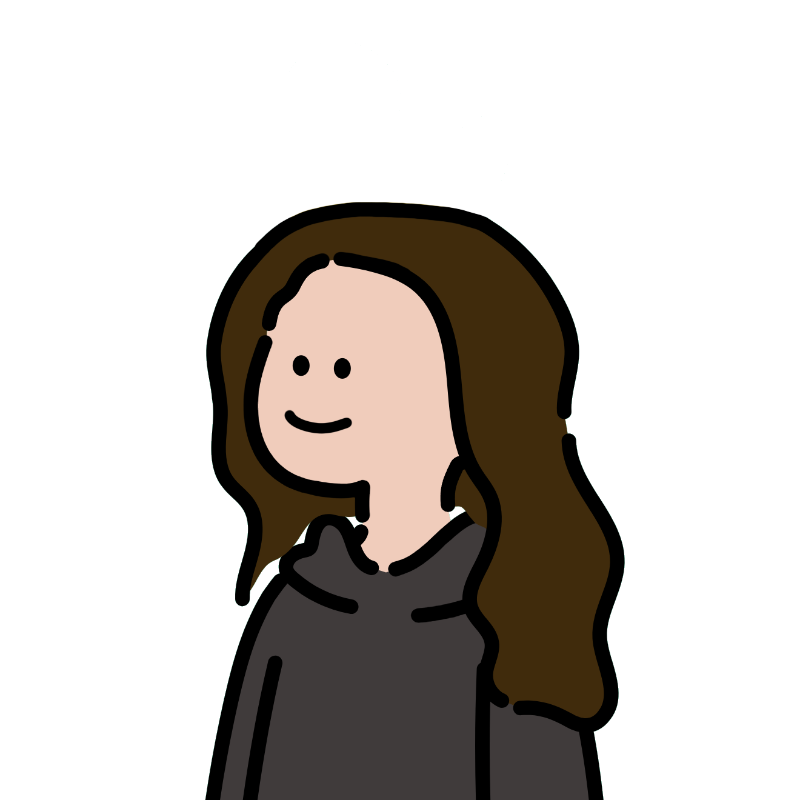
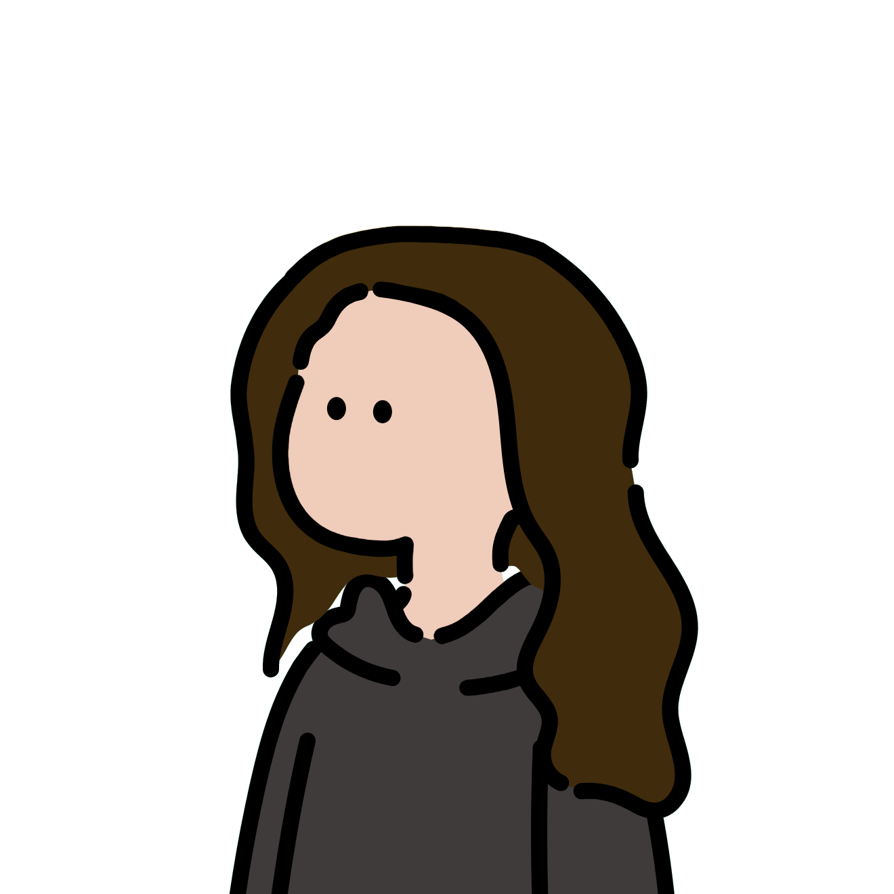

Design is fun
When I'm not working on projects, playing some music or wandering in one of my video games, I love to explore the creative side of design by creating fun and experimental projects. These projects allow me to push the boundaries of my creativity and try out new techniques and tools. I find joy in the process of bringing my ideas to life.



Audio mixer
Exploring Figma's 3D capabilities by recreating an audio mixer from scratch.